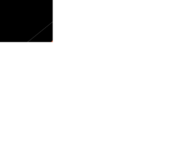

Liouville’s theorem tells us that phase space volume is preserved, but the qualitative nature of phase space dynamics can still be very complex. The simplest case is complete integrability.
Definition. A Hamiltonian system with phase space of dimension is completely integrable if it has independent conserved quantities that Poisson commute (i.e. for any two conserved quantities).
By the Liouville-Arnold theorem, a completely integrable Hamiltonian system can always be transformed into a form where the Hamiltonian depends only on the momenta, which are conserved, with the corresponding coordinates evolving linearly. These are called action-angle coordinates and we will not study them further. An example of a completely integrable system is uncoupled harmonic oscillators, the energy of each oscillator is conserved.
A partially integrable system has some conserved quantities, but fewer than . The trajectories of these systems are typically chaotic. Phase space distributions in chaotic motion are spread around phase space as time evolves. This agrees with the popular notion that chaos is extremely irregular, as the configuration of the system moves around all possible coordinates and momenta as time evolves. The notion of phase space distributions spreading also implies that there is a consistent sensitivity to precisely where a particular system is in phase space; two points initially close at one time might be very far from each other subsequently. A classic example of a chaotic system is three bodies interacting via a gravitational potential – its chaotic nature means it cannot be solved analytically.
A key property of chaos is sensitivity to initial conditions. Suppose we have two points and in phase space. Initially they are a distance apart (using some invented notion of distance, since there is no natural metric in phase space – this is not Euclidean geometry!). Then in chaotic systems, the distance between nearby trajectories grows exponentially
where is known as a Lyapunov exponent. Many real world systems, such as the weather, are chaotic, and this has consequences for modelling those systems. If we want to forecast the weather we need to know the physical laws governing the system and the initial conditions. But because the system is sensitive to initial conditions (our measurements of the current weather), any tiny error in the initial conditions leads to a large error in prediction (the weather forecast) after only a short time.
There is an even stronger notion of mixing which is ergodicity. Ergodic systems diffuse around phase space so strongly that ensemble averages over are equivalent to time averages. Ergodic systems satisfy Poincaré’s recurrence theorem: if all orbits in a system are bounded (i.e. don’t diffuse to infinity), they will cross any given connected set infinitely often, at a rate proportional to the proportion of phase space filled by the set. This means that if you start at a given point, the trajectory of a Hamiltonian system will come arbitrarily close to all other points in phase space. Ergodicity is an extremely important concept in the foundation of statistical mechanics but rigorous mathematical results are hard to come by
Example. Not examinable. Henon-Heiles system. This system is a model of stellar motion around a galactic core. The Hamiltonian is given by
For this is just two independent harmonic oscillators. Turning on gives them a nonlinear coupling. We will set , giving the equations of motion
It turns out the dynamics of this system is sometimes chaotic and sometimes not. Because the phase space is four dimensional it is difficult to visualise the trajectories of the system. The trajectory of the system is a line in four dimensional space. By intersecting this line with the 3-dimensional space we get a set of points in three dimensions. This is called a Poincaré return map. This return map is plotted for different initial conditions in Figure 31. We see that for some initial conditions the motion is regular, and periodic, whereas for others the motion is extremely complex – this is chaos.
